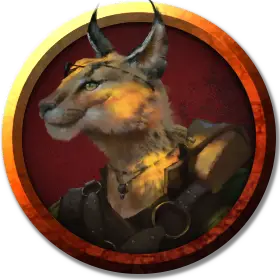

Туманная Река
River Mist
Средний Гуманоид (Табакси), хаотично-добрый, именной НИП

Класс Доспеха 14 (кожаный доспех)
Хиты 40 (9к8)
Скорость 30 футов, лазая 20 футов
| мод | спас | ||
|---|---|---|---|
| СИЛ | 10 | +0 | +0 |
| ЛОВ | 17 | +3 | +3 |
| ТЕЛ | 11 | +0 | +0 |
| мод | спас | ||
|---|---|---|---|
| ИНТ | 13 | +1 | +1 |
| МДР | 14 | +2 | +2 |
| ХАР | 15 | +2 | +2 |
Навыки Атлетика +2, Восприятие +4, Выживание +6, Скрытность +5
Чувства тёмное зрение 60 футов, пассивное Восприятие 14
Опасность 1 (200 опыта)
Бонус мастерства +2
Особенности
Языки. Река знает Общий плюс два других языка.
Кошачье проворство. Когда Река двигается в бою в свой ход, она может удвоить свою скорость до конца хода. Использовав эту особенность, Река не можете использовать её снова, до тех пор, пока она не переместится на 0 футов за один из своих ходов.
Действия
Мультиатака. Река совершает две атаки когтями, кротким мечом или коротким луком.
Когти. . Рукопашная атака оружием: +2 к попаданию, досягаемость 5 фт., одна цель. Попадание: 2 (1к4) рубящего урона.
Короткий меч. Рукопашная атака оружием: 4-5 к попаданию, досягаемость 5 фт., одна цель. Попадание: 6 (1к6 + 3) рубящего урона.
Короткий лук. Дальнобойная атака оружием: +5 к попаданию, дистанция 80/320 фт., одна цель. Попадание: 6 (1к6 + 3) колющего урона.
Описание
Туманная Река и Фляга Вина [Flask of Wine] – сестра и брат, оба члены Жентарима. Они не платят никаких налогов и сборов торговым принцам. Они ведут свои дела тихо, встречаясь с потенциальными клиентами только в Глотке Малара или обветшалых домах на Якорной стоянке Тайрикай. Они называют друг друга Река и Фляга.
Рост Реки около 5 футов 5 дюймов, вес – 100 фунтов. Она носит кожаный доспех и глазную повязку. (Она потеряла свой правый глаз в детстве в неприятном инциденте с рогаткой). Река скрытна и чувствует себя некомфортно на оживлённых улицах, предпочитая им джунгли, где она чувствует себя по-настоящему, как дома.
Река и Фляга могут провести персонажей к Огненному Пальцу и Дунгрунглангу. Они также слышали истории о старой женщине в Мбале, которая может поднимать трупы так, что зомби сохраняют память и способности, которые были у них при жизни.
Агенты Жентарима в Порту Нянзару приказали Реке и Фляге высматривать Артуса Симбера. Если они столкнутся с Артусом, они попытаются узнать о нем как можно больше. В следующий раз, когда они вернутся в порт Нянзару, табакси расскажут всё, что знают, вышестоящим из Жентарима, если их никак не убедить этого не делать.